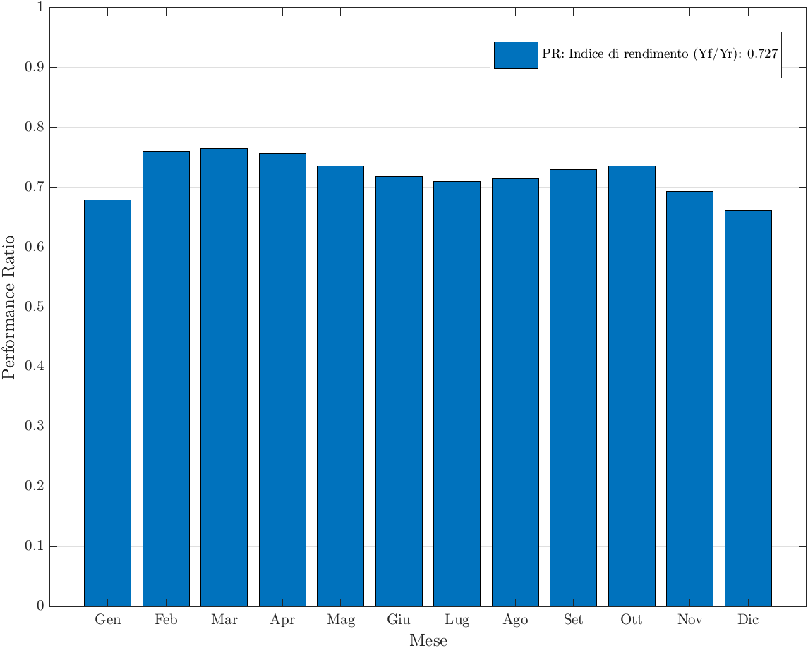
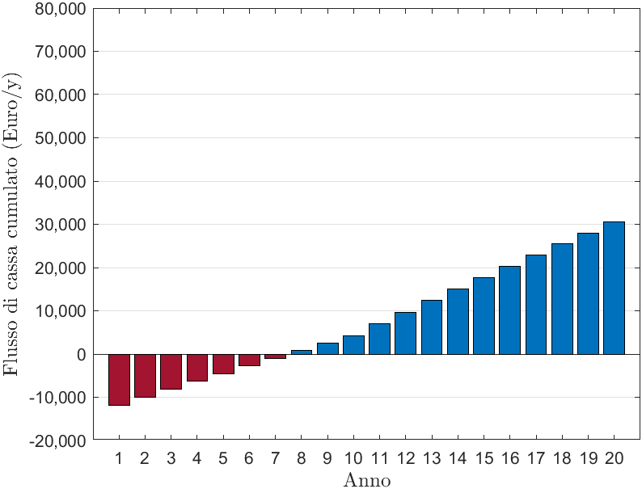
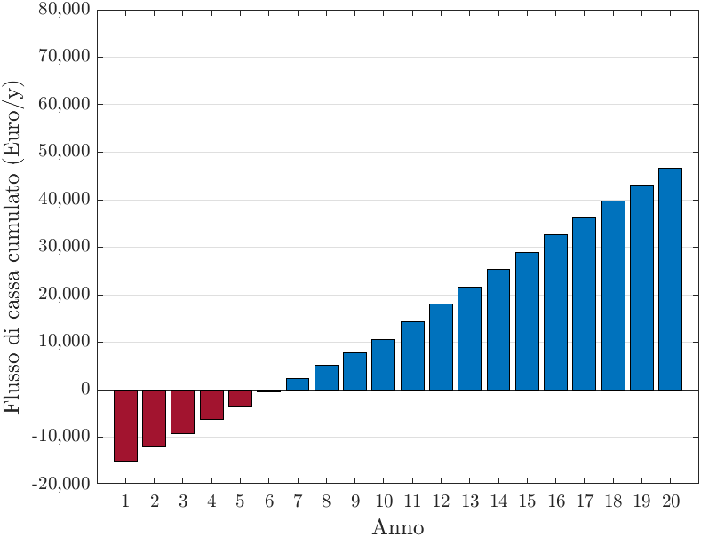

Progettazione e analisi di impianti fotovoltaici in bassa tensione e autoconsumo collettivo
Descrizione del Progetto
L'elaborato di tesi tratta lo studio e il dimensionamento di configurazioni impiantistiche volte alla massimizzazione dell'autoconsumo energetico collettivo. Il focus principale è sull'integrazione di sistemi fotovoltaici in contesti civili e commerciali operanti in bassa tensione, per promuovere l'efficienza energetica e la riduzione dell'impatto ambientale attraverso la condivisione virtuale dell'energia.
Obiettivi Principali
- Dimensionamento accurato di un impianto fotovoltaico per applicazioni residenziali e terziarie.
- Analisi dei flussi di energia e dei profili di carico per la stima dell'autoconsumo.
- Valutazione tecnico-economica delle configurazioni di Autoconsumo Collettivo (AUC).
- Rispetto stringente delle normative CEI vigenti per la connessione in Bassa Tensione.
Competenze e Tecnologie Applicate
Cos'è l'Autoconsumo Collettivo?
L'Autoconsumo Collettivo (AUC) è un modello energetico che permette a più soggetti (es. condomini) trovantisi nello stesso edificio, di unire le forze per produrre, consumare e condividere virtualmente energia proveniente da un impianto rinnovabile comune, ad esempio fotovoltaico. L'energia condivisa viene incentivata dal GSE, trasformando i consumatori in prosumer e riducendo significativamente le bollette, promuovendo inoltre l'indipendenza energetica e la riduzione delle emissioni.
Bilancio Energetico e Performance

Andamento del Performance Ratio.
Convenienza Economica (Con e Senza Accumulo)

Flusso di cassa cumulato a 20 anni senza sistemi di accumulo.

Flusso di cassa cumulato a 20 anni con sistemi di accumulo.
Conclusioni e Risultati del Progetto
- Integrazione Condominiale: Per l'impianto condominiale nello schema AUC si è operata una scelta progettuale di moduli complanari al tetto (non inclinati ulteriormente) per massimizzare la potenza installata sulla superficie disponibile, ottenendo un Performance Ratio (PR) medio annuale di 0.727, un valore molto buono al netto degli ombreggiamenti.
- Convenienza Economica: L'investimento fotovoltaico è risultato estremamente vantaggioso. La valutazione economica in vari scenari di costo energia (2021 e 2022) ha dimostrato tempi di ritorno (Payback Time) compresi tra i 4.0 e 6.1 anni, con un ritorno economico percentuale (ROI) finale tra il 126% e il 201%.
- Vantaggi dell'Accumulo (Batterie): Un risultato chiave è l'impatto dei sistemi di accumulo. Nonostante un costo d'investimento iniziale superiore del 23.7%, l'accumulo garantisce un ricavo economico a lungo termine superiore del 144% rispetto al caso senza batterie.
- Dinamica di Condivisione: L'accumulo permette infatti di coprire i picchi di fabbisogno condominiale nelle ore serali, massimizzando drasticamente la quantità di energia "condivisa" col GSE e massimizzando gli incentivi associati all'Autoconsumo Collettivo.